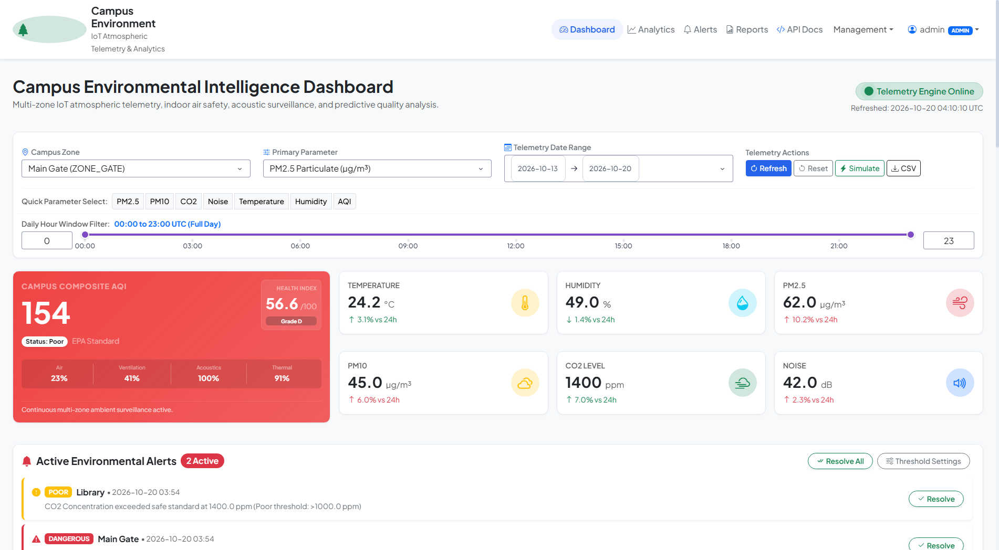
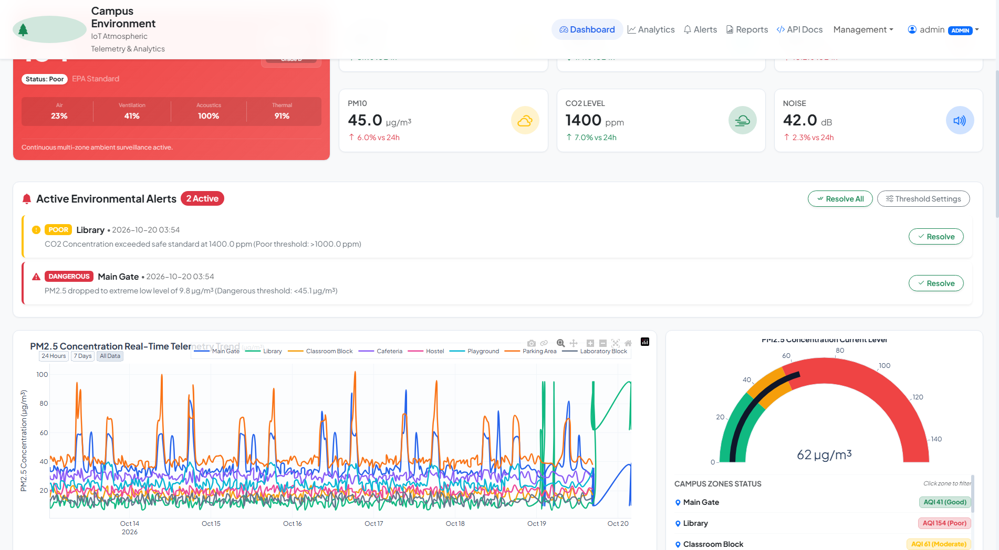
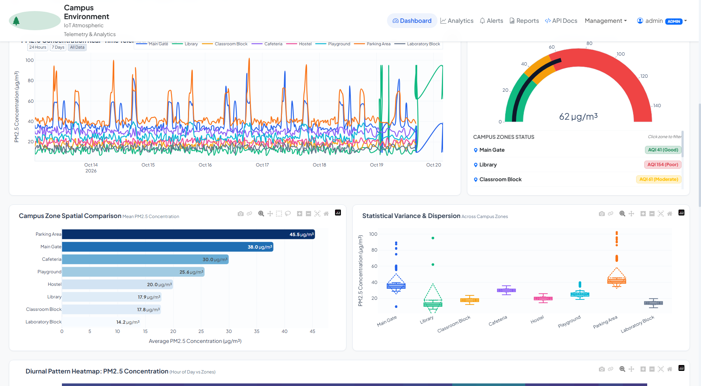
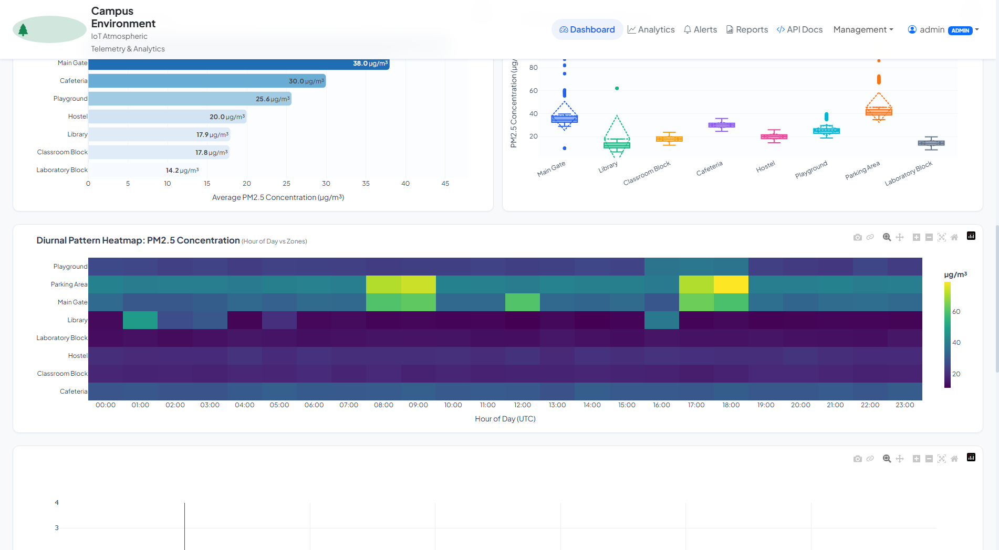
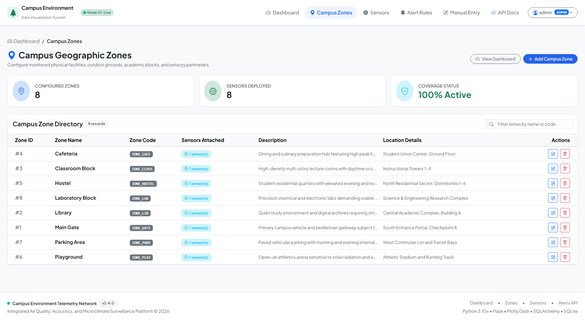
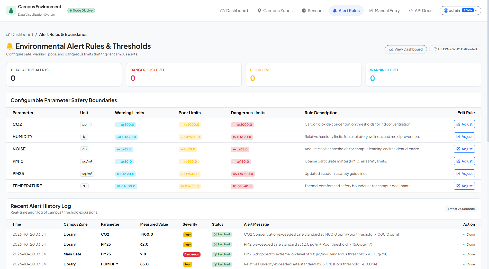

Campus Environmental
Data Visualization System
A comprehensive full-stack atmospheric, acoustic, and indoor air quality surveillance platform engineered for university campuses. Collects, models, and renders real-time telemetry with EPA AQI grading and multi-tier anomaly detection.
Optimal acoustic & thermal safety
Gate, Library, Labs, Hostels, etc.
Historical hourly data populated
100% Pytest suite passing
Live Multi-Zone Sensor Feeds
Simulated real-time streaming showing temperature, humidity, PM2.5 particulate matter, and acoustic decibel readings across campus stations.
Telemetry Stream Simulator
Interactive live visualizer updating every 3 seconds
Monitored Campus Micro-Climates
Eight strategically located sensor hubs reporting continuous multi-parameter telemetry across indoor study areas, outdoor transit, and laboratory facilities.
Central Library
Quiet study zone strictly regulated for noise suppression and ventilation.
Main Gate
Transit entry point with peak morning particulate and exhaust tracking.
Classroom Complex
Multi-storey lecture facility monitoring student density & fresh air circulation.
Dining Center
High daytime traffic dining hall tracking humidity, heat, and ventilation.
Residential Hostel
Student dormitories with focus on nighttime thermal comfort & silence.
Athletic Arena
Open-air sports arena measuring ambient UV, solar heat index, and dust.
Commuter Parking
Transit exhaust monitoring identifying localized combustion spikes.
Laboratory Block
Precision environmental control for scientific experiments and chemical safety.
Platform Visual Interface
High-resolution views of the Plotly Dash reactive dashboard, administrative fleet management consoles, and analytical reports.

Live Plotly Dash Core
Real-time KPI metrics, dynamic time-series, and interactive gauges.

Historical Multi-Trace Trends
Rolling averages, peak detection, and threshold overlay bands.

5-Axis Spatial Spider Radar
Normalized multi-attribute environmental footprint across zones.

Diurnal Heatmap Matrix
Hour-of-day vs day-of-week intensity variations.

Admin Zone Provisioning
CRUD operations for campus spatial locations and metadata.

Threshold Boundary Configuration
Multi-tiered warning, poor, and dangerous alert limits.
Academic Thesis & System Engineering Documentation
The full graduation thesis document includes comprehensive mathematical models (diurnal solar radiation equations, EPA AQI piecewise algorithms, Pearson correlations), full architecture diagrams, and empirical testing proofs.